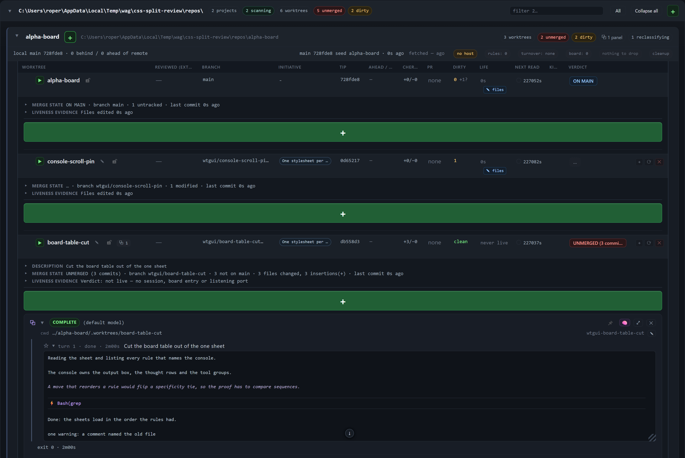
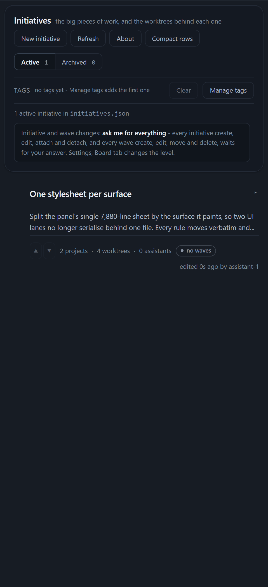
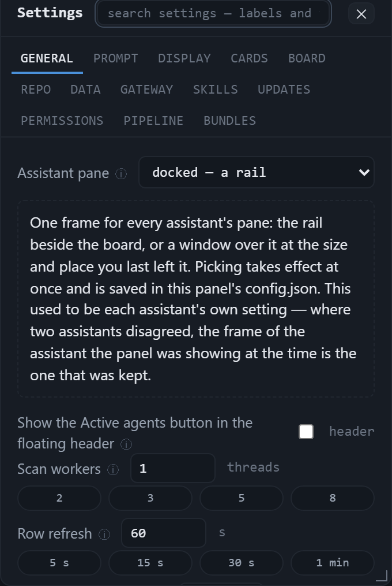

PR #940 cut public/style.css into 19 per-surface sheets at main db287788.
That split proved the cut was faithful. This review asks whether the result is a good split: what each sheet owns,
what is repeated across them, what the two catch-all sheets still hold, where load order decides a property, which
rules match nothing in a running page, and how many sheets a lane must open to change one surface. Every number below
is computed by tools/css-split-review.mjs; the split's own six-pane layout numbers are cited from
docs/reports/css-split.html, not re-run.
Follow-up: the three moves
After this review, one change in this branch moved the three worst
tangles to the sheets that should own them. The tables in sections 1 to 9 describe the split as reviewed at
db287788; this card is the same tool run after the moves
(docs/reports/css-split-review/after-fixes-static.json). Every rule was moved verbatim, and the
rule multiset across all 22 sheets is identical before and after: 3,380 rules, 0 lost, 0 added, 0 edited.
The three moves
14 cut-dialog rules, late.css to overlays.css
15 board-table #projects rules, chart.css to board.css
27 console-composer rules, overlays.css to console.css
Sheets, before to after
late.css 68 to 54;
overlays.css 288 to 275;
console.css 265 to 292;
board.css 198 to 213;
chart.css 252 to 237 (not one of the 19; it was never counted)
19-sheet total
3,061 to 3,076 rules. The
rise is the 15 board-table rules moving from the uncounted chart.css into the counted
board.css; no rule was created.
late.css now
54 rules in 3 blocks
(22 sliver, 21 legend,
11 search), no cut-dialog block. base.css is still 13 tokens and resets.
What did not change
The cascade is still 4 (selector, property) pairs
across 3 selectors, with the same winners; 0
whole rules are still written twice; the three stale .queue-* selectors are still there.
Verification
A headless harness applied the 22 sheets at db287788 and at this branch
to the same DOM and compared every computed property on 98 elements plus their ::before and
::after, at 900x700, 800x250 (the sliver media block) and 340x700 (the narrow container query):
0 differences. The split's six-pane proof was re-run too; its board pane differed only
by fixture read churn (a status cell landing on the panel's not-read-yet mark during the run), so that half is
not cited as a pass.
Verdict
A faithful cut, and a split that was only half done at the review
commit. The rule stream moved with no duplicate rule and no reordering, but several surfaces had no
single home. The follow-up card above records the three moves that fixed the worst of it; the tables in this
report are the review's own state.
24 selectors of
3,474 live in two sheets;
0 whole rules are written twice;
41 declaration blocks of 3+ declarations repeat across sheets
Cascade
4 (selector, property) pairs are set by two sheets;
late.css wins by load order where it collides
Catch-alls
base.css is clean (13 rules, all tokens and resets);
late.css holds 68 rules for four surfaces, of which
62 are the only definition of their selector
Dead
2,244 of 3,346
rules match no element at rest; 3 are provably stale;
25 sit in a media block that does not apply here
Cost
A console change touches 8 sheets;
settings 8; initiatives 6.
The board table touches 12, and only
46 of its
316 rules come from board.css
1. Inventory: what each sheet owns
Nineteen sheets, in the order public/index.html:11-29 loads them. Lines are the file's lines today,
including the boundary comment the split added to each sheet; bytes are the working copy. Rule blocks, selector
entries and declarations are parsed from the sheet text by tools/css-split-review.mjs:238, with comments
dropped. Shares are of the 19-sheet total, not of the old single file.
Sheet
Surface the split names
Lines
Bytes
Rules
Selectors
Declarations
Rules %
Bytes %
base.css
tokens and resets
97
4,832
13
16
52
0.4%
0.9%
chrome.css
header and status strip
249
14,703
63
72
251
2.1%
2.7%
settings.css
Settings drawer and its tabs
428
43,669
281
293
1,003
9.2%
7.9%
board.css
project boxes, folders, agent rows, new-agent form
486
30,403
198
206
639
6.5%
5.5%
jobs.css
job cards
195
15,887
83
93
282
2.7%
2.9%
console.css
the console: agent pane and thought rows
873
59,021
265
285
806
8.7%
10.7%
turns.css
conversation turns
132
9,527
64
65
209
2.1%
1.7%
rows.css
the jobs table's row controls, marks and artifacts
The 19 sheets carry 551,343 bytes. The pre-split working copy was 537,460 bytes
(the split's own report, section 1), so the new text is 13,883 bytes: exactly the
13,883 bytes of boundary comments the split named, and nothing else. The largest sheet is
initiatives.css at 406 rules and
15.9% of the bytes; the smallest is
base.css at 13 rules.
base.css has the highest declaration density at
4.0 declarations per rule, which is
what a 13-rule token block looks like; the largest component sheet, settings.css, carries
3.6.
2. Duplication: what is written in more than one sheet
Measured two ways, both from the parsed rules (tools/css-split-review.mjs:271): a selector entry that
occurs in more than one sheet, and a declaration block whose normalized text is identical in more than one sheet.
The second is reported overall and again for blocks of three or more declarations, because a repeated
display: none is a shared idiom, not a copied component.
Selectors in two or more sheets
24 of
3,474 (0.7%),
50 occurrences in all
Identical declaration blocks
178 of
2,445 repeat across sheets:
41 with 3+ declarations,
97 with exactly one
Whole rules written twice
0
(same at-rule context, selector and declarations in two sheets)
The 24 selectors that cross a sheet boundary
Selector
Sheets
Occurrences
.topbar
chrome.css, late.css
3
body
base.css, late.css
3
:root
base.css, overlays.css
2
.agents-block .job:last-child
board.css, jobs.css
2
.ap-dock-head
chrome.css, board.css
2
.as-subpane[data-subpane="chat"]>.job
assistant-panes.css, pipeline.css
2
.as-subpane[data-subpane="chat"]>.job>.job-head
assistant-panes.css, pipeline.css
2
.as-subtabs button
chrome.css, assistant-panes.css
2
.as-tabs button
chrome.css, assistant-panes.css
2
.chip
chrome.css, board.css
2
.chips
chrome.css, board.css
2
.jl-think .think-dot
console.css, pipeline.css
2
.job-cmd
console.css, rowstrips.css
2
.job-foot
console.css, rowstrips.css
2
.job-head
jobs.css, overlays.css
2
.job-out
console.css, rowstrips.css
2
.legend
late.css, chart.css
2
.settings-tabs
chrome.css, settings.css
2
.shell
assistant.css, late.css
2
.shell>main
assistant.css, late.css
2
.spawn-strip-head
chrome.css, assistant.css
2
button
base.css, chrome.css
2
html
base.css, late.css
2
thead th
chrome.css, chart.css
2
These are not new duplication created by the cut: each of the two blocks that name the same selector was already
in the one file, and the cut happened to put them in different sheets. The list is nevertheless the raw material for
the cascade section: .topbar and .shell are the only two where both sheets set the same
property.
The worst pairs, by substantial block
Sheet pair
Identical blocks of 3+ declarations
board.css + chart.css
6
board.css + rowstrips.css
5
console.css + jobs.css
5
board.css + overlays.css
4
board.css + console.css
4
board.css + jobs.css
4
Worst pairs by all repeated blocks (including one-liners) are in
docs/reports/css-split-review/numbers.json; they are dominated by color: var(--dim),
display: none and min-width: 0 and say little about the split. The substantial blocks are
component shapes: a 9-declaration inline-flex pill in jobs.css and console.css, an 8-declaration input surface in
settings.css and pipeline.css, and a 6-declaration ellipsis row repeated four times across overlays.css and
rowstrips.css. Those are the candidates for a shared block layer, not for a sheet move.
3. Catch-alls: what base.css and late.css still hold
base.css is clean
public/base.css holds 13 rules:
1 token block (:root),
12 resets (two universal rules, seven scrollbar pseudo-elements,
html, body and the form-control rule) and
0 rules naming a surface. Nothing in it belongs to a surface. Its
97 lines include the boundary comment; the sheet is the token layer the rest reads, and it is the one
sheet every lane may need and no lane owns.
late.css is not an override sheet; it is the only home of four surfaces' states
public/late.css loads last (public/index.html:29) and holds
68 rules in four blocks. For each block the table gives the surface sheet that
should own it and how many of the block's rules have no counterpart selector in any other sheet: the "sole" column is
the part of late.css that is not an override at all.
Block
Rules
Sole definitions
Should live with
Bytes
the sliver-window layout: header, shell, agent cards and folders
22
17
chrome.css, board.css
1,882
the cut dialog
14
14
overlays.css
1,598
the chart legend and its popover
21
20
chart.css
2,246
the assistant and hot-agent search popovers
11
11
assistant.css
2,058
The cut dialog (public/late.css:85): 14
rules, all 14 sole. The dialog is created at
public/app.js:7884, and overlays.css contains no .cut- selector at all. A
surface whose entire styling lives in the last-loaded catch-all has no sheet a lane can open.
The sliver layout (public/late.css:30-80): 22
rules, all inside @media (max-height: 300px), 17 sole.
It lays the board and the header out as panes when the window is 300 px tall or less. This is a board and chrome
layout, and both sheets are loaded before it; it is in late.css because it must beat them, which is exactly the
cascade leverage a per-surface sheet was supposed to remove.
The chart legend and its popover (public/late.css:152):
21 rules, 20 sole,
for a sheet (chart.css) that was never part of the split.
The search popovers (public/late.css:246):
11 rules, all
11 sole, for the drag and resize affordances
of the assistant and hot-agent search popovers. They are the only styling of those handles anywhere.
4. Cascade: where load order decides
Measured as (selector, property) pairs that two or more sheets set on the same exact selector, with the winner
chosen by !important first and load order second (tools/css-split-review.mjs:494). The
selector is the whole key, so specificity is equal on both sides and source order is the only decider. Variant
selectors (.legend-toggle against .legend-toggle:hover) are not counted as collisions; they
are a different selector and a different specificity.
4 pairs exist, across 3 selectors. There is no
top ten to print: only four pairs exist, so all four are listed. That is the strongest single result in this review.
The cut preserved the order of the rules, and a 19-sheet split that adds no new cascade ties is a faithful split by
the browser's own definition of the cascade.
Selector
Properties
Sheets
Winner
Context
.topbar
2
chrome.css, late.css
late.css (2)
@media (max-height: 300px)
.jl-think .think-dot
1
console.css, pipeline.css
pipeline.css (1)
@media (prefers-reduced-motion: reduce)
.shell
1
assistant.css, late.css
late.css (1)
@media (max-height: 300px)
The one that is not late.css is worth naming: .jl-think .think-dot is the console's thinking dot,
defined in console.css:395, and overridden in pipeline.css:541 inside a
prefers-reduced-motion block. A console rule sitting in pipeline.css is a cross-surface leak that only
shows up when the user asks for reduced motion, and pipeline.css wins because it loads later.
5. Dead selectors, measured in a browser
Every CSSOM rule the page applied was matched against the document after the six panes were driven: board table,
console, queue, assistant float, initiatives and settings. The harness boots the panel on the same fixture the
split's proof used (tools/verify-css-split.mjs's seedFixture, exported for this tool) and
matches each selector with a real querySelectorAll (tools/css-split-review.mjs:615). Dynamic
state pseudo-classes (:hover, :focus, :active, :disabled and
their family) and pseudo-elements are stripped before matching, because a resting page cannot be in a hover state;
structural pseudo-classes (:not, :is, :where, :has,
:nth-*) are kept. A rule in a media block that does not apply at 1680x1200 is counted as
dormant, not dead.
Rules measured
3,346 style rules across every applied
sheet, including chart.css and the two core/ card sheets. This is higher than the split's 3,312 top-level CSSOM
nodes because this walk counts the rules inside each media block, which the node count folds into its parent.
Zero matches at rest
2,244
(67.1%)
Provably stale
3: zero matches, and no class or id
token in any shipped .js/.html file and no template prefix that could build it
Dormant
25: the selector matches, but its media block
does not apply at this viewport
Sheet
Rules
Zero at rest
Live
Stale
initiatives.css
403
323
80
0
pipeline.css
259
224
34
0
overlays.css
288
221
66
3
feedback.css
216
195
21
0
console.css
261
185
75
0
rows.css
181
152
29
0
chart.css
238
125
106
0
board.css
198
110
87
0
panes.css
120
94
26
0
rowstrips.css
133
88
45
0
assistant-panes.css
126
88
38
0
The eleven sheets with the most zero-match rules; the other twelve rows, including
base.css at 0 dead of 6, are in docs/reports/css-split-review/numbers.json.
The three stale selectors are all in overlays.css and all from one retired queue list:.queue-list, .queue-item and .queue-text match nothing, and no shipped file
produces those names, not even as a template prefix. They are the only CSS in the 19 sheets that is provably
unreachable.
Read the 67% carefully. The fixture is a resting board: it does not open the deliverables popover, the
pipeline window or the clarify history, and it does not hover a row. Those states account for most of the
2,244 zero-match rules: for example .deliver-pop and its children (overlays.css),
.pipew-* (pipeline.css) and most of the initiatives tab's archived and editor states. The structural scan
is the number to act on; the zero-match count is the number that shows how much of each sheet is state, not shape.
6. Cost: sheets a lane must open to change one surface
For a surface root, every applied rule whose selector matches an element inside the root is counted, grouped by
the sheet it lives in (tools/css-split-review.mjs:732 and :1029). The universal reset,
scrollbar pseudo-elements, html/body, and blocks that declare only custom properties are
excluded from the count and reported as the shared layer: a lane restyling one surface does not open the token layer,
and counting it once per surface would make every surface look identical. A sheet counts if it contributes at least
one surface rule.
Surface
Elements
Surface rules
Sheets
From its own sheet
From other sheets
#board the board table
776
316
12
46
270
#console one agent's console
67
102
8
46
56
#queue the assistant's queue pane
173
91
9
50
41
#assistant the assistant float
342
330
15
16
314
#initiatives the initiatives tab
48
77
6
66
11
#settings the Settings drawer
1,651
269
8
222
47
The three examples the row asks for
Console: 102 surface rules from 8 sheets; only
46 are in console.css. The rest
are the console's own parts living in other surfaces' sheets: the reply box and thread name in overlays.css,
the job head and actions in jobs.css, the conversation turn in turns.css, the strips and thread buttons in
rowstrips.css, and the warning line in board.css.
Settings: 269 surface rules from 8 sheets; only
222 are in settings.css. The
largest leak is overlays.css with the question-card block (.turn-question, .tq-head,
.tq-question, .tq-choices), followed by the topbar's dot and zoom controls in chrome.css and
the pipeline bundle rows in pipeline.css.
Initiatives: 77 surface rules from 6 sheets; only
66 are in initiatives.css.
This is the cleanest of the three: the eleven foreign rules are the float's shared group chrome in
assistant-panes.css, three topbar buttons and one chip, and one .mono. An initiatives change opens six
sheets, five of them for the float's own shared furniture.
#assistant (330 rules from 15 sheets) and
#projects (316 rules from 12 sheets) are containers: their roots
include the panes nested inside them, so their counts are upper bounds on "sheets that can affect this surface", not
counts of that surface's own rules. The board number is still the important one. board.css contributes
46 of the 316 rules, while
chart.css contributes 87 (the
countdown rings and poll buttons), rowstrips.css 40
(the git, description and TODO strips), overlays.css 27
(the reply and deliverables popovers inside a row), and late.css 25
(the sliver layout). chart.css is one of the three sheets the split left alone, and it still owns the board table's
project borders and row guides (public/chart.css:241, :267, :302): 15 of its
rules name #projects directly.
7. The split's own six-pane numbers, cited
The layout proof was run by the split, not by this review: two trees, the cut undone and the cut committed, the
same fixture, six panes, every element border box and every text run compared. The table is quoted from
docs/reports/css-split.html, section 4. It is cited because re-running it would measure
this branch's app code against the same cut, not answer a different question; the review's own screenshots are fresh
and are in section 8.
Pane
Root
Elements
Boxes differ
Max delta
Text runs
Text positions differ
board table
#projects
778
0
0
438
0
console
.job[data-thread]
68
0
0
33
0
queue cards
#as-queue
174
0
0
109
0
assistant float
#assistant
295
0
0
165
0
initiatives
#as-initiatives
49
0
0
33
0
settings
#settings
1,652
0
0
1,030
0
Every pane: zero differing boxes and zero differing text positions. The rule-stream half passed as well:
3,061 rules against 3,061, the same selector-and-declaration sequence in the same at-rule contexts. The CSSOM carried
3,312 rule nodes before and after. Five of the six captures are byte-identical; the board differs in ink only, in the
countdown rings: 1,066 pixels of 7,264,384 (0.015%), in one 37 px column, the one time-driven value the measurement
excludes.
8. Fresh captures
Six panes from this tree, captured by the review tool at 1680x1200 with a device scale of 2, on the same fixture
and a frozen clock. These are the review's own pictures, not the split's before/after pair.

board table (#projects, 776 elements in the cost pass).
3,296x2,204 at 2x. The poll rings in the last column are chart.css's rules, not board.css's.console (.job[data-thread], 67 elements).
3,072x902. At the review commit the output box, thought row, tool call and reply box came from four
different sheets; the composer moved to console.css in the follow-up, with no visual change.
assistant float (#assistant, 342 elements).
960x2,226. A container: its count includes every pane it hosts.

initiatives (#as-initiatives, 48 elements).
958x2,092. The cleanest surface: 66 of 77 rules are its own.

Settings (#settings, 1,651 elements).
680x1,014. 222 of 269 rules are its own; overlays.css contributes 27 for question cards.
9. Verdict: the three worst tangles
1. The board table has no home sheet
board.css is named for the board and owns 46
of the 316 rules that match under #projects. chart.css owns
87, including 15 selectors that name
#projects directly: the project's left border, the row padding and the row guide line
(public/chart.css:241, :267, :302). rowstrips.css adds
40 rules for the strips inside a row.
A change to the board table opens 12 sheets, and the two that matter most are board.css and
a sheet the split deliberately left alone.
2. The console is an eight-sheet surface
102 rules match inside one console; 56
of them are outside console.css. Its reply box is in overlays.css (19 rules), its head in jobs.css (16), its turns
in turns.css (8), its strips and thread buttons in rowstrips.css (7), and its warning line in board.css (4). A lane
changing the console's composer has to open overlays.css, a sheet named for deliverables, the reply box and the
question cards, which is where the composer was before the split and where it stayed.
3. late.css is the only home of four surfaces' states
68 rules, 62 of them the only definition of their
selector. The cut dialog is entirely here (14 rules,
created at public/app.js:7884, no .cut- rule in overlays.css). The 300 px-tall window
layout is here (22 rules, 17 sole) and must load last
to beat the sheets it is laying out. The legend popover (20 sole) and the search popovers' drag handles (11 sole)
are here too. "Late overrides" describes what late.css was for; it is not what it holds.
What the split did well
No rule was duplicated by the cut. 0 whole rules
are written twice; 24 of 3,474 selectors
cross a sheet boundary, and the four cascade pairs they produce are inherited from the one file rather than
created by the move.
base.css is exactly what it says it is. 13 rules, one token block and twelve resets,
no surface rule.
The dead tail is tiny. Three stale selectors in 3,061 rules: the retired
.queue-list, .queue-item and .queue-text in overlays.css.
Initiatives is the model to copy. 77 surface rules from six sheets, 66 of them in
initiatives.css, with the foreign rules limited to the float's shared group chrome.
What the review recommended, and what landed
All three moves below landed after this review as one change in this branch; they are kept here as the review's
recommendation, and the follow-up card at the top gives the resulting sheet counts. The fourth item is still a
recommendation, not a change.
Give the cut dialog a home: move public/late.css:85 into overlays.css, where the rest of the
dialog and question-card styling lives.
Move the board table's own rules out of chart.css: the #projects selectors at
public/chart.css:241-310 are board.css's subject. Keep chart.css for the poll ring's paint if the
ring is a chart, but name the split: today the board's border and guides are in a sheet the split did not touch.
Move the console's composer from overlays.css (19 rules: .thread-name, .reply,
.reply-box, .chipbox) into console.css, and its head from jobs.css (16 rules). That is
the difference between an eight-sheet console and a three-sheet one.
Leave the 41 substantial repeated blocks alone for now. They are shared idioms (pills, inputs, ellipsis rows),
and a shared block layer is a bigger decision than this cut. The split's job was to stop two lanes serialising
behind one file; it did that.
10. Reproduce every number
One committed tool computes all seven measurements. The text half takes seconds; the browser half boots the panel
on the fixture and takes a few minutes.
npm run review:css-split # all seven, captures under docs/reports/css-split-review
node tools/css-split-review.mjs --static # inventory, duplication, catch-all, cascade (no browser)
node tools/css-split-review.mjs --no-shots # browser measurements, no captures
The run writes docs/reports/css-split-review/numbers.json (every table in sections 1 to 9 is read from
it) and docs/reports/css-split-review/dead-rules.json (all 3,346 measured rules with their match counts and
at-rule context). The follow-up card is a second static run after the three moves, stored in
docs/reports/css-split-review/after-fixes-static.json; the command is the same, run against the commit
whose numbers you want. Exit 0 means every measurement ran; 1 means one failed; 2 means Playwright is absent and the browser
half did not run. The tool imports seedFixture from tools/verify-css-split.mjs, so the
review and the split's proof use the same board, console, queue, assistant, initiatives and settings panes.
Measurement limits, stated once: cascade counts exact selectors only, so a variant selector is a
different rule; cost counts rules that match an element inside the root and excludes the shared token/reset layer, and
the two container surfaces include their nested panes; dead is a resting-state measurement of a fixture, not an
exhaustive walk of every hover, open dialog and folded row. The split's six-pane layout numbers are cited, not
re-measured, and this review makes no new layout claim.
Report written 2026-11-28. Reviewed commit: main db287788 (PR #940, version 1.191.0).
The three follow-up moves landed in this branch as version 1.193.0. Tool: tools/css-split-review.mjs.
Evidence: docs/reports/css-split-review/ (numbers.json for the review,
after-fixes-static.json for the follow-up).